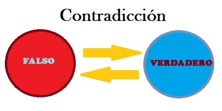
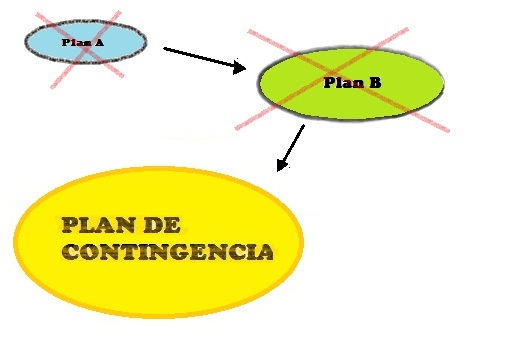

Seguridad
Un problema al intentar saber con precisión el nivel de seguridad de nuestro sistema es que no es posible representar la seguridad de manera cuantitativa, solo se le puede clasificar desde "muy baja" hasta "muy alta" y la clasificación se le asignará con base a la experiencia de los desarrolladores.
Las revisiones de los sistemas de seguridad crítica es de vital importancia, las pruebas estadísticas no son suficientes para asegurar el buen funcionamiento y la seguridad de nuestro sistema, por eso se deben de realizar las siguientes 5 revisiones al validar y verificar la seguridad del sistema:
- Revisión para lograr una estructura sustentable.
- Revisión para verificar que el diseño de los algoritmos y estructuras de datos sean consistentes con el comportamiento que se requiere.
- Revisión de los algoritmos y estructuras de datos.
- Revisión de los casos de prueba del sistema.
- Revisar que las funciones creadas sean las que se planearon.
Para poder probar la seguridad del sistema la prueba por contradicción es la más efectiva. Se realiza suponiendo que se puede alcanzar un estado inseguro durante la ejecución del programa, para demostrar que no es posible, con ayuda del código se debe concluir que si se tienen las condiciones necesarias para que ocurra un caso de peligro entonces las condiciones de terminación no serán consistentes. Esto se repite para todos los casos detectados en los que pueda haber errores o algún tipo de peligro.

En los sistemas de seguridad críticos hay dos razones por la cual se debe prestar más atención a la calidad:
- Los accidentes son hechos raros en los sistemas críticos y es imposible simularlos durante las pruebas del sistema.
- Los requerimientos de seguridad son requerimientos que no contemplan el comportamiento del sistema si llega a un estado inseguro.
El desarrollo de sistemas de seguridad críticos debe seguir un modelo de ciclo de vida para desarrollarse, el cual consiste en los siguientes pasos:
- La creación de un registro de peligros y de supervisión del sistema.
- Designación de personal específico en la seguridad.
- La utilización extensiva de revisiones de seguridad durante el proceso de desarrollo.
- La creación de un sistema de certificación de seguridad en el cual los componentes de seguridad críticos se certifican por medio de la evaluación de su seguridad.
- Hacer una documentación que solo se dedique a la configuración del sistema, siempre complementada por la documentación técnica.
Los encargados de la seguridad del sistema deben ser claramente identificados por todos los involucrados en el sistema. El ingeniero encargado de la seguridad debe tener exclusivamente esa responsabilidad, no se debe involucrar en el desarrollo del sistema, su trabajo es revisar que todo lo relacionado con la seguridad sea implementado de manera correcta y sea documentada en su totalidad.
Es necesario que el sistema pueda asegurar su funcionamiento en caso de que suceda algún evento imprevisto, gran parte de la seguridad se debe concentrar en sus validaciones en tiempo de ejecución. Las aserciones entran en juego aquí porque se debe asegurar que no es posible llegar a un estado de peligro bajo ningún motivo, los sistemas críticos deben tener implementados varios planes de contingencia los cuales sirven para que el sistema sepa como actuar en caso de un error, estos planes deben de probarse exhaustivamente porque son recursos que entran en juego en momentos críticos.

Anterior Siguiente